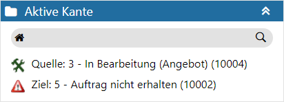

Bei Anwahl einer Kante wird der Bereich "Aktive Kante" dargestellt. In diesem sieht man auf einen Blick welche Schritte durch die Kante verbunden sind.

Ø Kopfzeile
In der Kopfzeile des Bereichs wird die Bezeichnung "Aktive Kante" angezeigt.
Ø Tabelle
In der Tabelle wird das Quell- und Zielobjekt der aktiven Kante angezeigt. Durch Anwahl eines Eintrags wird der entsprechende Schritt im Graphen und im Definitionsbereich in den Fokus gelegt.